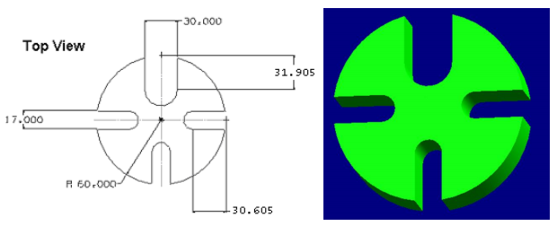

3.git clone submodules 組別倉儲網址
4.git pull request的方式進行推送 (組長要同意才行推送)
在另一種方法中，可以使用
➢在主工具欄中選擇草圖
無論哪種情況，都會彈出一個對話框詢問
定義草圖平面。屏幕將顯示草圖選項。可以選擇草圖平面，
草圖繪製方向和類型草圖的平面。
使用“創建草圖”對話框創建草圖時，可以選擇
通過單擊所示的坐標係可以在其上創建草圖的平面。
這個將突出顯示您選擇的飛機。
選擇的默認平面是XC-YC。
但是，可以選擇在另一平面上繪製草圖。
如果有事先在模型中創建的任何實體特徵，任何平坦表面也可以用作草繪平面
➢選擇XC-YC飛機並單擊確定
將顯示草圖平面，並標記X-Y方向。
主屏幕將更改為“草繪環境”。 XY平面突出顯示為
用於草繪的默認平面。這是基本的草圖窗口。還有一個特殊的素描任務
NX 12中的環境，它在主窗口中顯示所有草圖工具。
用於訪問草圖任務環境。
➢單擊直接草圖工具欄區域中的更多選項
➢在草圖任務環境中單擊打開，如下所示
在完成標誌旁邊有三個有用的選項。你可以改變框中的草圖名稱。
下一個是東方素描從而將視圖定向到草圖平面。
如果模型文件是在草繪過程中旋轉，請單擊此圖標以查看
在平行於屏幕的平面上繪製草圖重新附著將草圖附加到另一個平面上，
基準平面或路徑，或更改草圖方向。它允許您將草圖重新附加到
所需的平面，而無需重新創建所有曲線，尺寸和約束。
3.3草圖曲線工具欄
該工具欄包含用於創建常用類型的圖標曲線和样條曲線，編輯，擴展，修剪，
圓角等。每種類型的曲線都有不同的方法選擇和創建方法。
讓我們討論最多常用選項。
輪廓
此選項會根據您在彈出工具欄中選擇的圖標創建直線和圓弧。
您可以使用坐標系或輸入長度和線的角度如下圖所示。
線
此選項將選擇性地僅創建直線。
弧
此選項通過兩種方法之一創建弧。
第一個選項以三個順序創建弧點如下圖所示。
第二個選項創建具有中心點，半徑和後掠角或按中心點的弧，帶有起點和終點圖示如下。
圓
創建圓類似於創建圓弧，不同之處在於，圓是封閉的。
快速修剪
這將從曲線的交點修剪延伸的曲線。該選項顯示為如果每個實體與另一個實體相交，
則將它們拆分，並刪除已選擇該部分。
Studio Spline
可以使用極點或通過點創建基本樣條曲線（B樣條曲線和Bezier）。
所需的曲線度。樣條線將在第七章中詳細討論（自由格式特徵）。
3.4約束工具欄
所有曲線都是通過拾取點創建的。例如，一條直線有兩個點。
在2D環境中，任何點都有兩個自由度，一個沿X，另一個沿Y
軸。點的數量取決於要創建的曲線的類型。因此，曲線實體
自由度數是其包含的點數的兩倍。
這些程度可以通過創建具有固定實體的約束來消除自由度。
實際上，建議通過刪除以下所有自由度（使草圖完全受約束）
實體直接或間接地歸屬於固定實體。
可以通過賦予尺寸或幾何特性，如平行度，垂直度等。
在NX 12中，智能約束是自動應用的，即自動尺寸或幾何
約束由NX 12解釋。您可以通過單擊“連續自動”來關閉此選項。
尺寸如下圖所示。以下段落顯示瞭如何手動應用約束。
尺寸約束
通過給尺寸賦予固定實體（例如軸）的尺寸，可以消除自由度，
平面，坐標系或模型中創建的任何現有實體幾何。
這些尺寸可以是線性，徑向，角度等。
可以隨時編輯尺寸值在草圖繪製過程中，雙擊尺寸。
幾何約束
除了尺寸約束外，還可以給出一些幾何約束來消除自由程度。
它們包括平行，垂直，共線，同心，水平，垂直，等長等。
該軟件具有查找以下可能約束的能力所選實體。
例如，將約束應用到下圖中的行上平行於矩形的左側（該線最初與矩形成一定角度）。
單擊此圖標將顯示與該特定草圖中的實體相關的所有選項。
顯示/刪除約束
該窗口列出了與所選任何實體相關的所有約束和約束類型。
可以刪除任何列出的約束或更改約束的順序。
狀態行中顯示不受約束的自由度數。
所有應通過遵循約束模型來應用約束來消除這些約束。
3.5範例
3.5-1
➢繪製以下草圖
➢在Z方向上將該草圖拉伸60 mm
3.5-2
➢按照如下所示應用尺寸約束

- 選擇所有尺寸。
- 右鍵單擊並隱藏尺寸
- 選擇菜單→編輯→移動對像或選擇 從功能區欄中移動曲線
- 選擇所有曲線。您應該看到有四個物體 在選擇對像中選擇
- 指定運動為距離
- 在指定向量中選擇YC方向
- 輸入距離為0.5英寸
- 在結果對話框中，確保單擊 複製原始單選按鈕
- 點擊確定
- 然後使用 基本曲線以完成草圖
草圖已準備好後:
- 選擇編輯→移動對像或從功能區欄中選擇移動曲線
- 選擇外部曲線。確保選擇曲線的所有四個部分
- 在Y方向上將下部曲線移動-1.5英寸。這一樣在YC負方向上1.5英寸
這將在套管外部形成曲線。
➢使用直線將此曲線與套管的內部曲線連接如圖所示，它將形成一條閉合鏈曲線。
現在，將在較小的一側創建套管外部所需的曲線，這將形成凸緣部分。
- 選擇編輯→移動對象
- 選擇外線，如下圖所示
- 在XC方向上將下部曲線移動-0.5英寸。
這一樣在XC負方向上0.5英寸
- 使用直線將兩條線連接起來，如右圖所示
- 單擊完成標誌
- 保存並關閉文件
3.6 練習
3.6.1 圓形底座

3.6.2固定器的草圖
WEEK13
webots tutorial 1
tutorial 1 :https://cyberbotics.com/doc/guide/tutorial-1-your-first-simulation-in-webots
1.先創立一個資料夾
2.建立一個新的世界
3.設定方格參數與圍牆高度
4.建立三個木塊
5.建立一個機器人
6.物理施力的模擬
7.建立程式控制器
8.導入機器人內
webots tutorial 2
tutorial 2 :https://cyberbotics.com/doc/guide/tutorial-2-modification-of-the-environment
1.另外儲存一個世界
2.刪除原先場地
3.創建新的場地
4.建立球體並更改參數
5.為各個節點作命名的動作
6.建立四個牆壁並更改參數
7.一樣為各個節點做命名
8.開始模擬
webots tutorial 3
1.儲存成新的模擬
2.將牆壁的顏色改為藍色
3.改球體的材質外觀
4.打開球體的節點
5.將檔案導入
6.打開view中的感測器範圍
7.打開後可以看到感測器範圍
8.模擬
webots tutorial 4
1.儲存新的模擬
2.新增一個控制器
3.導入網頁內的程式碼
4.將控制器導入機器人
5.存檔並開始模擬